sum plus plus

A weighted sum with custom constraints tool created by Jean Sung for the Final Project in Domain Specific Languages, Fall 2014. The project's updates and how to install/run instructions can be found here. Keep up with the progress by visiting the project notebook.
Sum Plus Plus is a tool to help you organize your thoughts regarding possible combinations of weighted types to satisfy custom constraints.
Quick find help:
-
Instructions
- Installing
- Sample Programs
- Creating your own files
- Running the test files
- Issues and feedback
Instructions & Help
Installing
Note: At this time, there is only tested support for Mac OSX 10.8+.
Before you install Your machine must have
pip- python v 2.7.x
- a program that can open xls files (e.g. Excel, Numbers, etc)
Find help for installing pip and python 2.7.x.
- Download the Github Repo as a zip file. 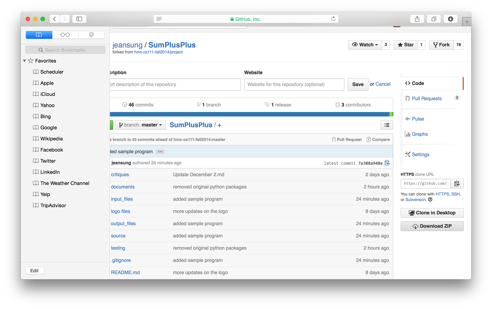
- Extract the Zip file on the desktop. Open a
terminalwindow andcdinto the Desktop directory. Run the commandsudo ./bootstrap.shto install the python packages. You might be prompted for the user password, if so, enter it. 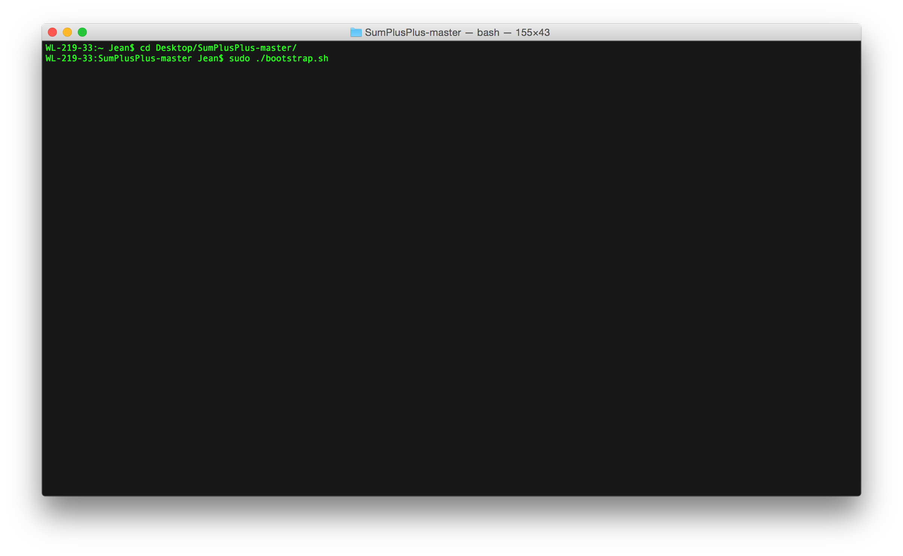 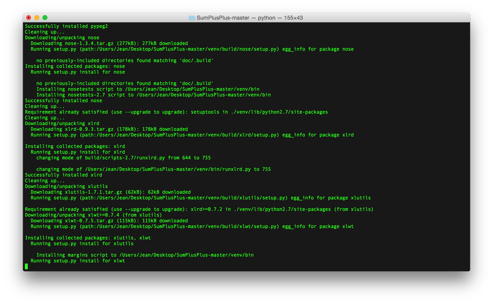
Sample Programs
To run the sample programs, run python run.py. Type 2 or 3 to run the sample programs. The Excel file should open after the program runs.
Here is a sample run of the program with table and rules included.
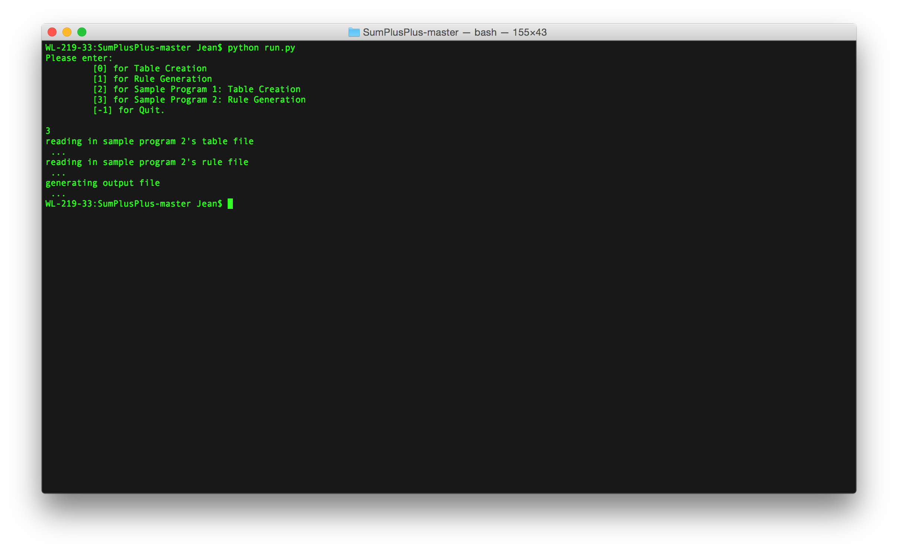
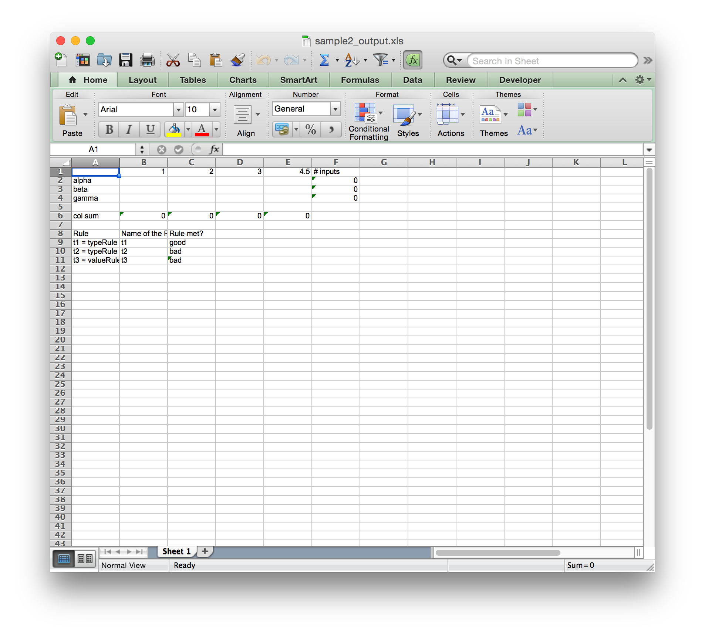.
Once the Excel file is open you can manipulate the inputs until the "bads" turn to "good". The blue box shows the area where you can manipulate. 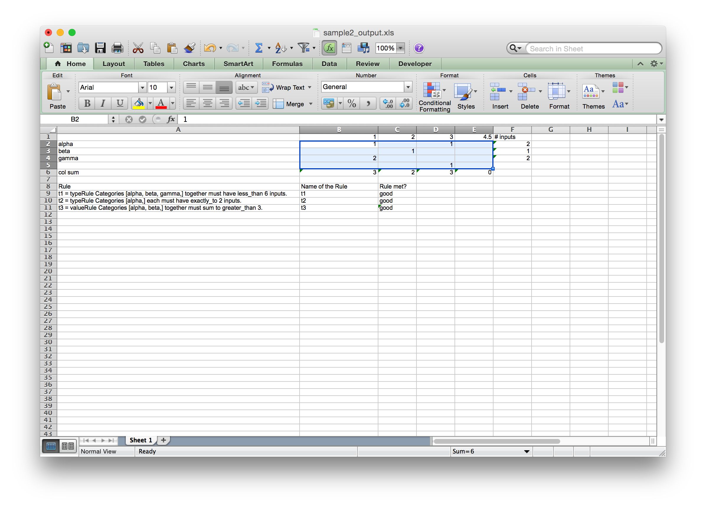
Creating your own files
General I/O Notes
Input files, the table files and the rule files must live in the input_files directory. Output files, the created Excel sandbox files, are generated in theoutput_files. You must be in the top level directory when you run run.py, which is the file that runs the program.
Creating the table and rules:
A table is a set of types and values. List the types in a comma separated string on the first line of the table file. List the values (can be int values or float values) as a comma separated string on the second line of the table file.
Here is a sample of the table file: 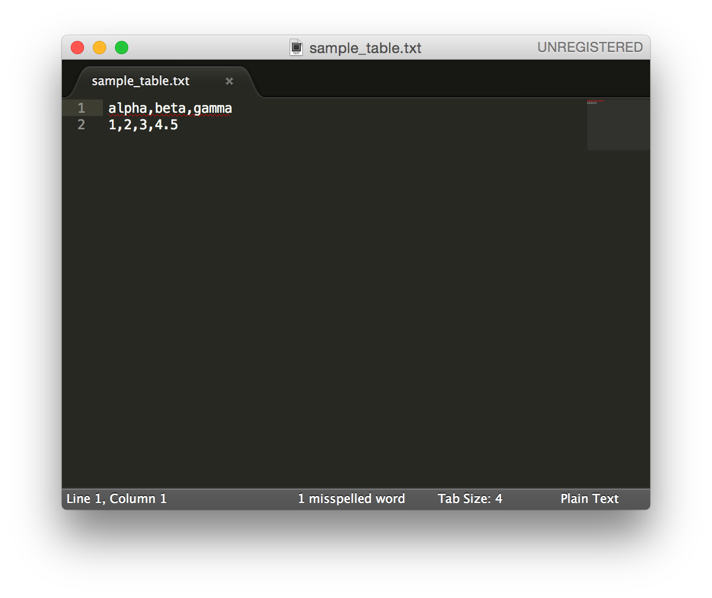
A set of rules is a collection of newline separated rule strings. There are two types of rules, value rules and type rules. Value rules constrain the the weighted sum of one or more individual categories or a collection of categories together. Type rules constrain the number of inputs of one or more categories or a collection of categories together.
Here is the grammar that the rules must adhere to.
// primitive things
letter = "A" | "B" | "C" | "D" | "E" | "F" | "G"
| "H" | "I" | "J" | "K" | "L" | "M" | "N"
| "O" | "P" | "Q" | "R" | "S" | "T" | "U"
| "V" | "W" | "X" | "Y" | "Z" ;
digit = "0" | "1" | "2" | "3" | "4" | "5" | "6" | "7" | "8" | "9" ;
decimal_point = "." ;
decimal_value = { digit }, decimal_point, { digit } ;
// name is an identifier for a rule
name = { letter } ;
// Total inputs must be an int
// Total of the value may be a double
totalInputs = { digit } ;
totalValues = { decimal_value } ;
// A type is any word (i.e. made up of letters)
type = { letter };
types = { type }
// Other rule parts
operator = less_than | exactly_to | greater_than ;
relation = "each" | "together" ;
// Rule types
typeRule = Categories (types) (relation) must have (operator) \
(totalInputs) inputs. ;
valueRule = Categories (types) (relation) must sum to (operator) \
(totalValues). ;
genericRule = typeRule | valueRule ;
Rule = name, "=", genericRule;
Rules = {Rule} ;
Here is a sample of the rules file:

Creating the Excel Sandbox file:
To create an initial Excel Sandbox table you must have a table file in the input_files directory. Then, use the command python run.py and type 0 for the option.
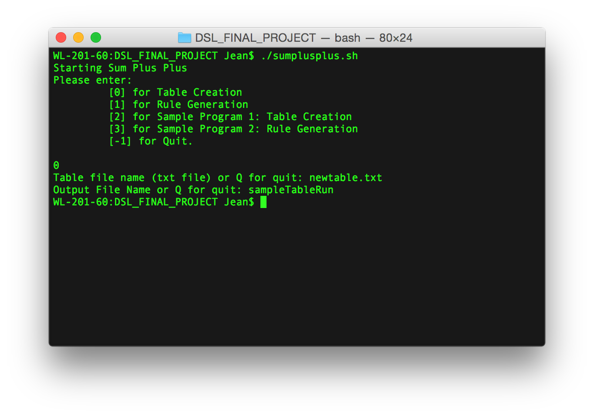
If you want an Excel file with custom constraints too, you must have a rule file in the input_files directory. Then, use the command python run.py and type 1 for the option.
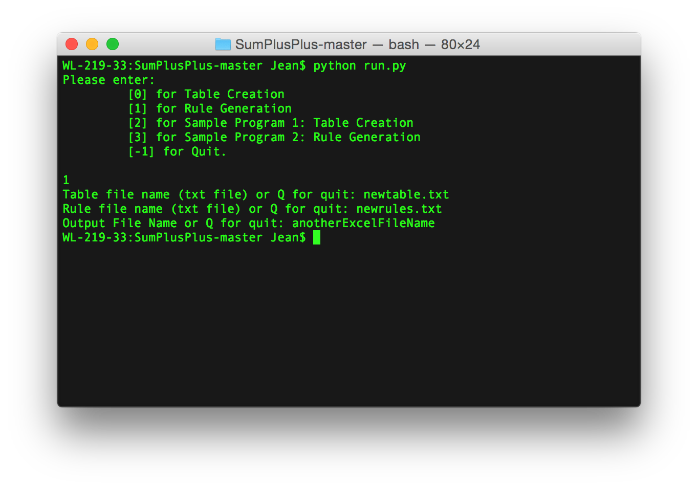
All output files get written into the output_files directory.
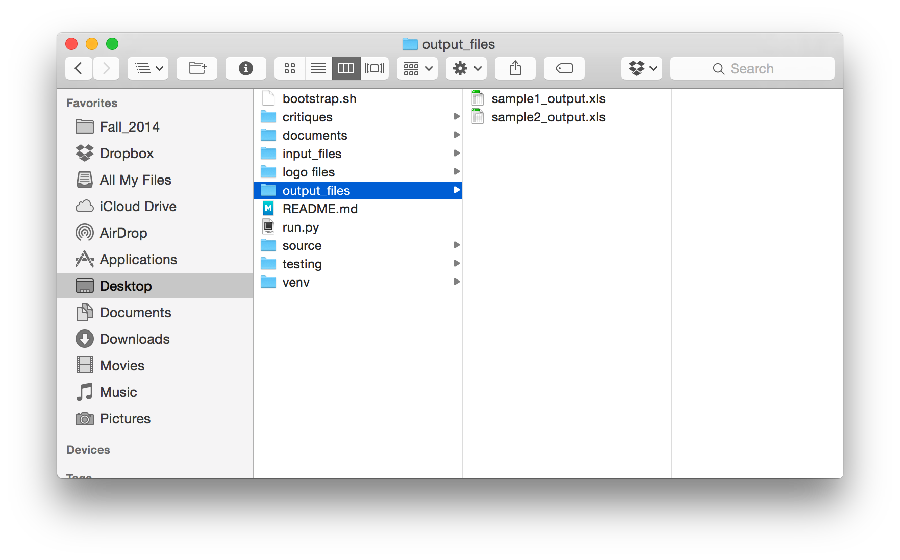
Running test files
In order to run the test files, cd into the testing directory. Use the command python -m unittest discover in order to run the tests.
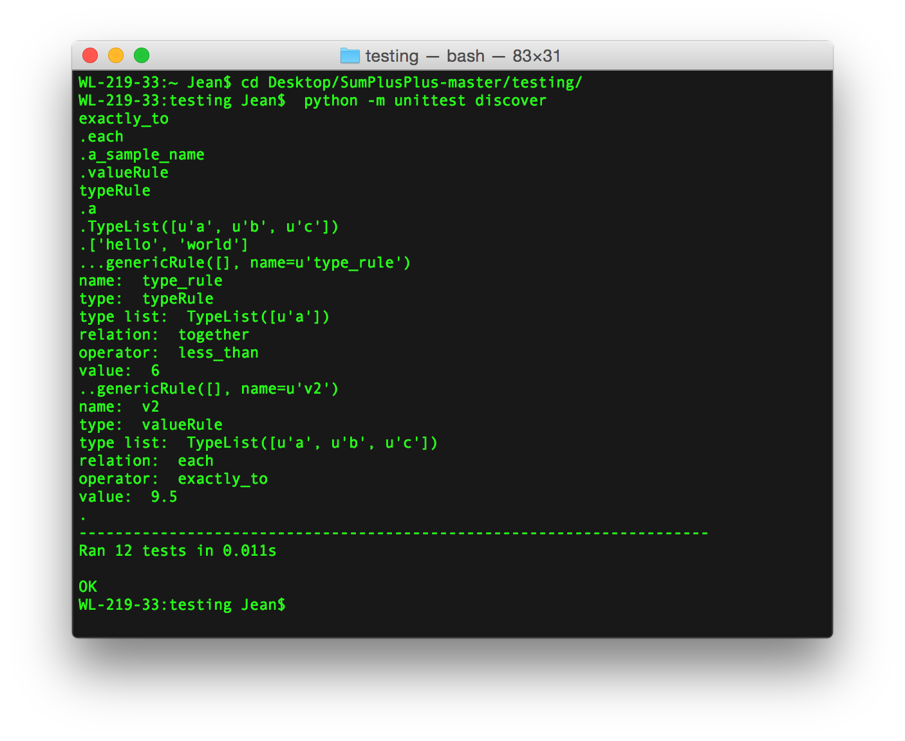
Issues & Feedback
If you find an unexpected error or have any general feedback, please file an issue on GitHub.